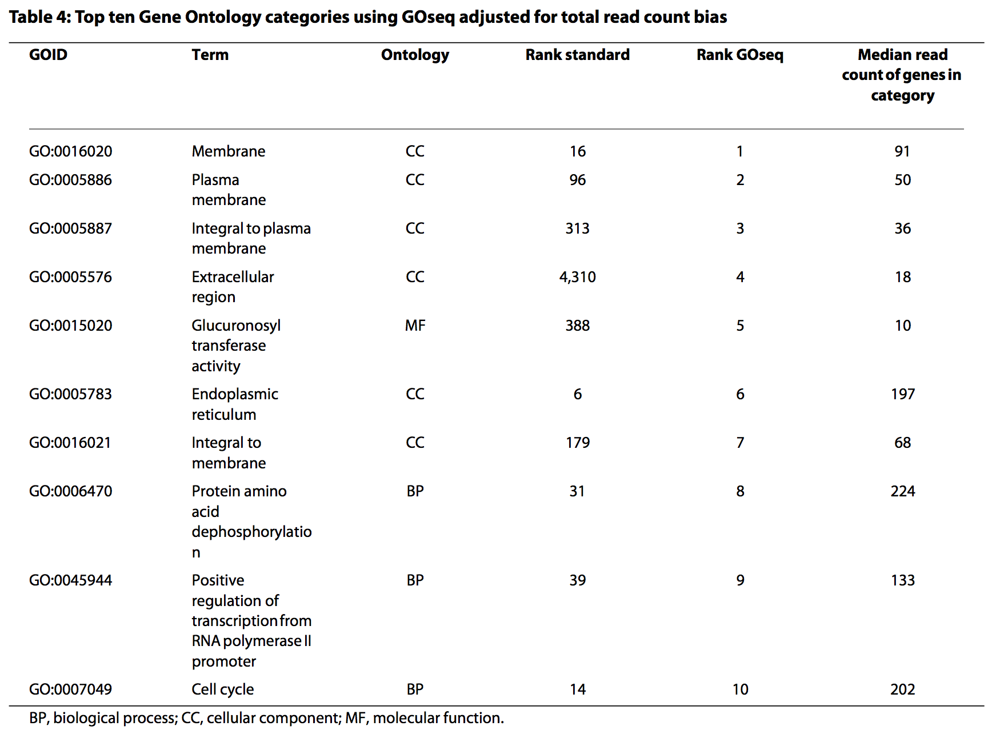
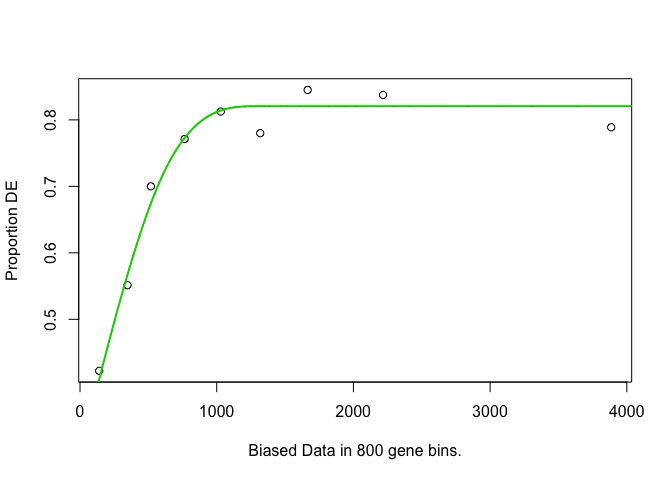
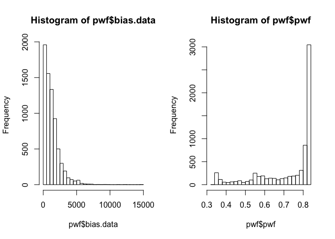
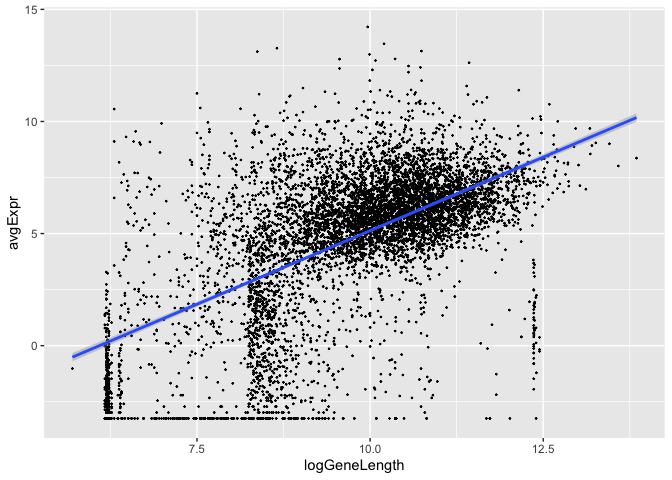
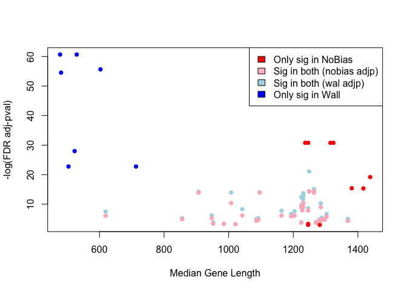
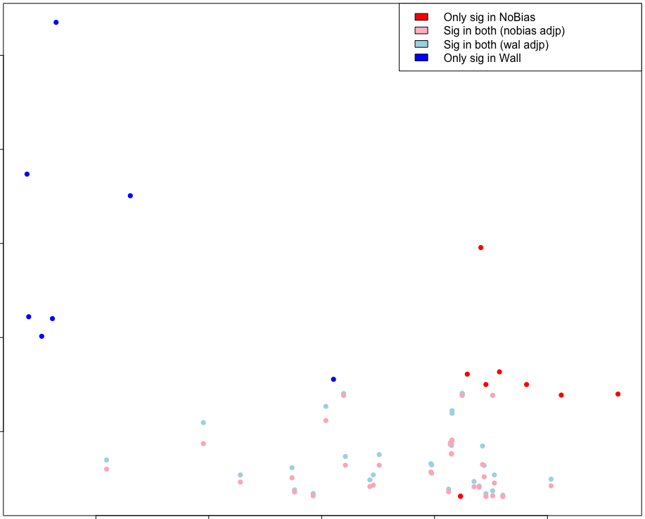

Over-representation analysis (Gene Ontology)¶
Objectives
- Identify enriched biological functions or processes within a list of differentially expressed genes
- Recognise the importance of gene length in over-representation analyses, and how to correct for this in your analysis
- Slides: lecture_annotation_pathways.pdf
Over-representation Analysis (Boyle et al. 2004) is a widely used approach to determine whether known biological functions or processes are over-represented (= enriched) in an experimentally-derived gene list, e.g. a list of differentially expressed genes (DEGs).
- Can perform over-representation analysis online (e.g., Enrichr, GeneSetDB, PantherDB), and also in R.
- The basic principles are to:
- identify a collection of differentially expressed genes
- test to see if genes that are members of specific gene sets (e.g., Reactome pathways, Gene Ontology categories) are differentially expressed more often than would be expected by chance.
Some caveats for RNA-seq data
- The gene-set analysis methods are applicable to transcriptomic data from both microarrays and RNA-seq.
- One caveat, however, is that the results need to take gene length into account.
- RNA-seq tends to produce higher expression levels (i.e., greater counts) for longer genes: a longer transcript implies more aligned fragments, and thus higher counts. This also gives these genes a great chance of being statistically differentially expressed.
- Some gene sets (pathways, GO terms) tend to involve families of long genes: if long genes have a great chance of being detected as differentially expressed, then gene sets consisting of long genes will have a great chance of appeared to be enriched in the analysis.
GOseq¶
- The GOseq methodology (Young et al., 2010) overcomes this issue by allowing the over-representation analysis to be adjusted for gene length.
- modification to hypergeometric sampling probability
- exact method (resampling) and an approximation-based method
- More recent publications have also applied this gene-length correction to GSEA-based methods.
- Still not widely understood to be an issue when performing RNA-seq pathway analysis, but REALLY important to take into account.
Results from the Young et al (2010) publication:¶



GOseq analysis¶
Need to figure out if our organism is supported… (code is “sacCer”)
## Genome Id Id Description Lengths in geneLeneDataBase
## 10 anoCar1 ensGene Ensembl gene ID TRUE
## 11 anoGam1 ensGene Ensembl gene ID TRUE
## 132 anoGam3 FALSE
## 12 apiMel2 ensGene Ensembl gene ID TRUE
## 137 Arabidopsis FALSE
## 56 bosTau2 geneSymbol Gene Symbol TRUE
## GO Annotation Available
## 10 FALSE
## 11 TRUE
## 132 TRUE
## 12 FALSE
## 137 TRUE
## 56 TRUE
Easier to find if we use View() (NB - this only works in RStudio.
Can’t use in Jupyter on NeSI).
Define differentially expressed genes
- Create a vector of 0’s and 1’s to denote whether or not genes are differentially expressed (limma analysis: topTable).
- Add gene names to the vector so that GOSeq knows which gene each data point relates to.
Load our topTable results from last session:
# Note: If you want to use tt from DESeq, replace $adj.P.Val with $padj below
genes <- ifelse(tt$adj.P.Val < 0.05, 1, 0)
names(genes) <- rownames(tt)
head(genes)
## YAL038W YOR161C YML128C YMR105C YHL021C YDR516C
## 1 1 1 1 1 1
## genes
## 0 1
## 1987 5140
Calculate gene weights¶
- Put genes into length-based “bins”, and plot length vs proportion differentially expressed
- Likely restricts to only those genes with GO annotation

Inspect output¶
Report length (bias) and weight data per gene.
## DEgenes bias.data pwf
## YAL038W 1 1504 0.8205505
## YOR161C 1 1621 0.8205505
## YML128C 1 1543 0.8205505
## YMR105C 1 1711 0.8205505
## YHL021C 1 1399 0.8205505
## YDR516C 1 1504 0.8205505
Gene lengths and weights¶

Gene length vs average expression¶
Is there an association between gene length and expression level?
library(ggplot2)
data.frame(logGeneLength = log2(pwf$bias.data),
avgExpr = tt$AveExpr) %>%
ggplot(., aes(x=logGeneLength, y=avgExpr)) +
geom_point(size=0.2) +
geom_smooth(method='lm')

How about gene length and statistical evidence supporting differential expression?
(Kinda hard to see, but it is apparently there…)
data.frame(logGeneLength = log2(pwf$bias.data),
negLogAdjP = -log10(tt$adj.P.Val)) %>%
ggplot(., aes(x=logGeneLength, negLogAdjP)) +
geom_point(size=0.2) +
geom_smooth(method='lm')

Length correction in GOSeq¶
- Uses “Wallenius approximation” to perform correction.
- Essentially it is performing a weighted Fisher’s Exact Test, but each gene in the 2x2 data does not contribute equally to the per cell count - it instead contributes its weight (based on its length).
- This means that a gene set (e.g., GO term) containing lots of significant short genes will be considered more likely to be enriched that a gene set with a similar proportion of long genes that are differentially expressed.
Run GOSeq with gene length correction:
Output: Wallenius method¶
## category over_represented_pvalue under_represented_pvalue numDEInCat
## 1325 GO:0005622 1.817597e-17 1 4298
## 7912 GO:0110165 8.200109e-12 1 4456
## 5245 GO:0042254 9.441146e-12 1 364
## 3817 GO:0022613 1.355385e-11 1 439
## 5446 GO:0043226 2.516156e-11 1 3826
## 5449 GO:0043229 4.433252e-11 1 3817
## numInCat term ontology
## 1325 5179 intracellular CC
## 7912 5417 cellular anatomical entity CC
## 5245 395 ribosome biogenesis BP
## 3817 482 ribonucleoprotein complex biogenesis BP
## 5446 4609 organelle CC
## 5449 4599 intracellular organelle CC
P-value adjustment¶
## [1] 45
## [1] 45
## [1] "GO:0005622" "GO:0110165" "GO:0042254" "GO:0022613" "GO:0043226"
## [6] "GO:0043229"
Filtering by gene set length¶
We are usually not interested in pathways or ontology terms that involve large numbers of genes (they are often rather broad terms or mechanisms), so we can exclude these from the results (here we only include significant GO terms that involve less than 500 genes):
Output
## category over_represented_pvalue under_represented_pvalue numDEInCat
## 1 GO:0042254 9.441146e-12 1.0000000 364
## 2 GO:0022613 1.355385e-11 1.0000000 439
## 3 GO:0030684 3.348423e-08 1.0000000 163
## 4 GO:0016072 3.873737e-08 1.0000000 274
## 5 GO:0006364 4.532117e-08 1.0000000 259
## 6 GO:0034470 2.776978e-07 1.0000000 360
## 7 GO:0030490 9.891093e-07 0.9999998 111
## 8 GO:0030687 1.502461e-06 1.0000000 62
## 9 GO:0042274 2.616777e-06 0.9999993 134
## 10 GO:0005730 3.753501e-06 1.0000000 264
## 11 GO:0003735 3.799990e-06 1.0000000 194
## 12 GO:0022626 4.824970e-06 0.9999984 140
## 13 GO:0044391 6.732064e-06 1.0000000 202
## 14 GO:0000462 1.221128e-05 0.9999977 99
## 15 GO:0005840 1.780243e-05 0.9999942 221
## 16 GO:0002181 2.156069e-05 0.9999913 169
## 17 GO:0034660 7.782098e-05 0.9999571 409
## 18 GO:0042273 8.604282e-05 0.9999745 117
## numInCat
## 1 395
## 2 482
## 3 171
## 4 299
## 5 282
## 6 401
## 7 116
## 8 62
## 9 143
## 10 292
## 11 221
## 12 156
## 13 231
## 14 104
## 15 254
## 16 191
## 17 467
## 18 126
## term
## 1 ribosome biogenesis
## 2 ribonucleoprotein complex biogenesis
## 3 preribosome
## 4 rRNA metabolic process
## 5 rRNA processing
## 6 ncRNA processing
## 7 maturation of SSU-rRNA
## 8 preribosome, large subunit precursor
## 9 ribosomal small subunit biogenesis
## 10 nucleolus
## 11 structural constituent of ribosome
## 12 cytosolic ribosome
## 13 ribosomal subunit
## 14 maturation of SSU-rRNA from tricistronic rRNA transcript (SSU-rRNA, 5.8S rRNA, LSU-rRNA)
## 15 ribosome
## 16 cytoplasmic translation
## 17 ncRNA metabolic process
## 18 ribosomal large subunit biogenesis
## ontology
## 1 BP
## 2 BP
## 3 CC
## 4 BP
## 5 BP
## 6 BP
## 7 BP
## 8 CC
## 9 BP
## 10 CC
## 11 MF
## 12 CC
## 13 CC
## 14 BP
## 15 CC
## 16 BP
## 17 BP
## 18 BP
GO terms¶
- Can use the
GO.dbpackage to get more information about the significant gene sets.
## GOID: GO:0005622
## Term: intracellular
## Ontology: CC
## Definition: The living contents of a cell; the matter contained within
## (but not including) the plasma membrane, usually taken to exclude
## large vacuoles and masses of secretory or ingested material. In
## eukaryotes it includes the nucleus and cytoplasm.
## Synonym: internal to cell
## Synonym: protoplasm
## Synonym: nucleocytoplasm
## Synonym: protoplast
NB - the code below is demonstrating the difference between running with and without the gene length correction that GOseq implements. You wouldn’t usually work through this as part of a standard pathway analysis.
Run GOSeq without gene length correction¶
Output: Hypergeomtric (Fisher) method
## category over_represented_pvalue under_represented_pvalue numDEInCat
## 1325 GO:0005622 8.650971e-29 1 4298
## 7912 GO:0110165 3.271100e-21 1 4456
## 5446 GO:0043226 9.826546e-16 1 3826
## 2650 GO:0009987 1.330459e-15 1 4146
## 5449 GO:0043229 2.060920e-15 1 3817
## 5245 GO:0042254 7.222008e-11 1 364
## numInCat term ontology
## 1325 5179 intracellular CC
## 7912 5417 cellular anatomical entity CC
## 5446 4609 organelle CC
## 2650 5023 cellular process BP
## 5449 4599 intracellular organelle CC
## 5245 395 ribosome biogenesis BP
P-value adjustment¶
GO.nobias.padj <- p.adjust(GO.nobias$over_represented_pvalue, method="fdr")
sum(GO.nobias.padj < 0.05)
## [1] 44
## [1] 44
## [1] "GO:0005622" "GO:0110165" "GO:0043226" "GO:0009987" "GO:0043229"
## [6] "GO:0042254"
Compare with and without adjustment¶
Extract out the different parts of the Venn diagram (yes, there are definitely better ways to do this).
## Only significant in Hypergeomtric analysis
onlySig.nobias <- setdiff(GO.nobias.sig, GO.wall.sig)
## Only significant in Wallenius analysis
onlySig.wall <- setdiff(GO.wall.sig, GO.nobias.sig)
## Significant in both
sig.wall.nobias <- intersect(GO.wall.sig, GO.nobias.sig)
Gene lengths and GO term membership¶
Can also extract gene length and GO membership information.
## [1] 1504 1621 1543 1711 1399 1504
## [1] "YAL038W" "YOR161C" "YML128C" "YMR105C" "YHL021C" "YDR516C"
## [1] "list"
## [1] "GO:0006082" "GO:0008150" "GO:0008152" "GO:0009987" "GO:0019752"
## [6] "GO:0032787"
## [1] "GO:0006810" "GO:0008150" "GO:0009987" "GO:0051179" "GO:0051234"
## [6] "GO:0055085"
Getting fancy…¶
Figure out which genes are in the significant GO groups, and then gets their lengths.
lengths.onlySig.nobias <- list()
for(i in 1:length(onlySig.nobias)){
inGo <- lapply(go, function(x) onlySig.nobias[i] %in% x) %>% unlist()
lengths.onlySig.nobias[[i]] <- len[inGo]
}
lengths.onlySig.wall <- list()
for(i in 1:length(onlySig.wall)){
inGo <- lapply(go, function(x) onlySig.wall[i] %in% x) %>% unlist()
lengths.onlySig.wall[[i]] <- len[inGo]
}
Significant: Hypergeometric vs Wallenius¶
- Only Hypergeometric (pink) vs only Wallenius (blue)
- Hypergeometric method is findings GO terms containing longer genes.
cols <- rep(c("lightpink", "lightblue"), c(10,7))
boxplot(c(lengths.onlySig.nobias, lengths.onlySig.wall), col=cols)

All significant GO terms¶
lengths.sig.wall.nobias <- list()
for(i in 1:length(sig.wall.nobias)){
inGo <- lapply(go, function(x) sig.wall.nobias[i] %in% x) %>% unlist()
lengths.sig.wall.nobias[[i]] <- len[inGo]
}
cols <- rep(c("lightpink", grey(0.7), "lightblue"), c(10,37,7))
avgLength <- lapply(c(lengths.onlySig.nobias, lengths.sig.wall.nobias, lengths.onlySig.wall),
median) %>% unlist()
oo <- order(avgLength, decreasing=TRUE)
boxplot(c(lengths.onlySig.nobias, lengths.sig.wall.nobias, lengths.onlySig.wall)[oo],
col=cols[oo], ylab="Gene Length", xlab = "GO term")

Gene length versus P-value¶
avgLength.wall <- lapply(c(lengths.onlySig.wall, lengths.sig.wall.nobias), median)
avgLength.nobias <- lapply(c(lengths.onlySig.nobias, lengths.sig.wall.nobias), median)
cols <- rep(c("blue", "lightblue", "red","lightpink"),
c(length(lengths.onlySig.wall), length(lengths.sig.wall.nobias),
length(lengths.onlySig.nobias), length(lengths.sig.wall.nobias)))
plot(c(avgLength.wall, avgLength.nobias),
-log(c(GO.nobias.padj[GO.nobias.padj < 0.05], GO.wall.padj[GO.wall.padj < 0.05])),
col=cols, pch=16, xlab="Median Gene Length", ylab ="-log(FDR adj-pval)")
legend('topright', c("Only sig in NoBias", "Sig in both (nobias adjp)",
"Sig in both (wal adjp)", "Only sig in Wall"),
fill=c("red", "pink", "lightblue", "blue"))

Summary¶
- Once we’ve generated count data, there are a number of ways to perform a differential expression analysis.
- DESeq2 and edgeR model the count data, and assume a Negative Binomial distribution
- Limma transforms (and logs) the data and assumes normality
- Here we’ve seen that these three approaches give quite similar results.
- For Gene Set analysis, gene length needs to be accounted for, since
longer transcripts are more likely to be found to be differentially
expressed.
- GOSeq adjusts for transcript length to take this into account.
- It is also possible to use GOSeq with other types of annotation (e.g., Reactome or KEGG pathways).